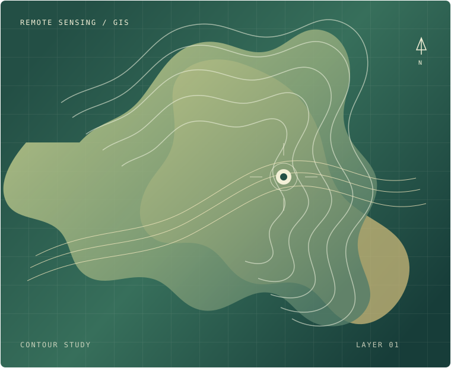

Spatial analysis
Strengthen my ability to work with spatial data and geospatial methods.
ABOUT ME
I’m Md. Asadujjaman Reon, a motivated and detail-oriented student with a strong academic foundation in Remote Sensing and GIS.

PLACE IS DATA, TOO.My academic foundation in Remote Sensing and GIS has shaped my interest in how geospatial tools can help explain environmental processes and challenges.
I hope to pursue graduate research abroad, contribute to meaningful environmental work, and continue developing as a researcher through careful analysis and interdisciplinary collaboration.
Explore my research interestsStrengthen my ability to work with spatial data and geospatial methods.
Grow in planning, carrying out, and communicating research projects.
Learn across disciplines to approach environmental questions more fully.
LOOKING AHEAD